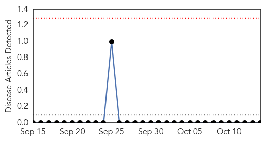
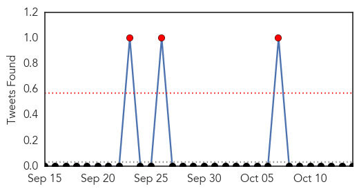
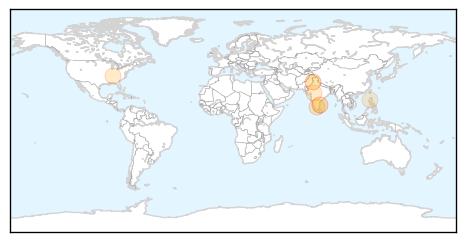
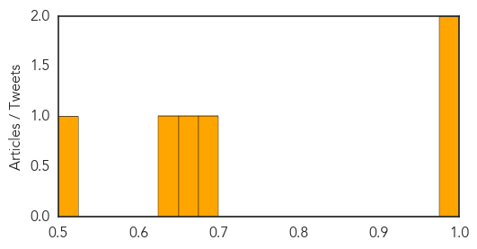

Bubonic Plague
30-Day Web Trend
0 alerts, 0 warnings

30-Day Twitter Trend
0 alerts, 0 warnings

Article Locations

Article Confidences

Top Articles:
-
No articles found for Oct 14, 2014
Top Tweets:
-
No tweets found for Oct 14, 2014
Dengue Fever
30-Day Web Trend
1 alerts, 3 warnings
30-Day Twitter Trend
0 alerts, 2 warnings

Article Locations
Article Confidences
Top Articles:
- 0.983
- ‘Dengue under control’
- 0.981
- TN Government Initiates Steps to Tame Dengue Ahead of Monsoon
- 0.698
- TN govt steps up to tackle fever, releases a toll free number
- 0.656
- 12 more test positive for dengue
- 0.644
- Fever: Call toll free number for TN govt support
- 0.524
- PH elected chair of 65th WHO Regional Committee Meeting
Top Tweets:
- 0.822
- Flavivirus news: Dengue outbreak slows in Guangdong Provice - CCTV: Dengue outbreak slows in Gu... http://t.co/WZ6AzxxMyX pathogenposse